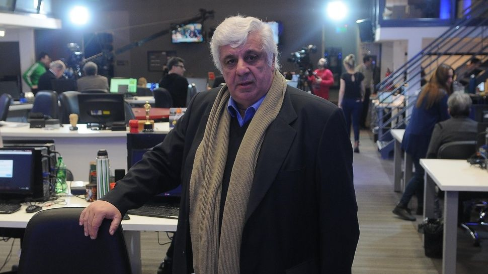

Tras la orden de detención al empresario de la carne por faltar a un juicio oral, rompió el silencio en Crónica HD. "Soy un perseguido político", disparó.
Dos juicios a Cristina Kirchner se quedaron sin tribunal oral y corre riesgo el inicio del caso de la obra pública. Son los casos "Los Sauces" y "Hotesur". Los tribunales a cargo dijeron que le correspondía a otros. Pero los nuevos no los aceptaron. Todo pone en duda el comienzo del caso de la obra publica a fines de mayo.
Argentina y Uruguay firmaron un acuerdo para la recuperación de bienes incautados en casos de lavado y crimen organizado. Cancillería suscribió un convenio de cooperación y negociación con las autoridades del país vecino.
Copa Libertadores: River reaccionó a tiempo y rescató un empate en Brasil. Perdía 2-0 ante Inter. En el entretiempo, Gallardo movió el banco, cambió el esquema y lo igualó con un golazo de De la Cruz.
Copa Libertadores: Huracán perdió en Venezuela y el ciclo Mohamed continúa en caída libre. Cayó 2-1 ante Deportivo Lara y está último en el Grupo B. El Globo lleva 11 partidos sin ganar.